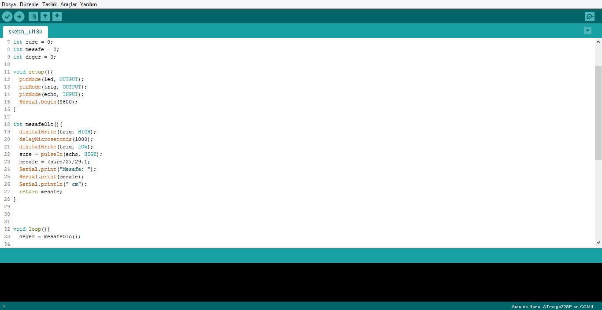

Arduino Kullanmayı Öğrendik!
by Onur Sertgil
18 Temmuz 2018

Bugün Arduino'yu kullanmayı öğrendik. Arduino bir prototiplemeye oldukça elverişli bir mikrokontrolcü. Sahip olduğu pinler sayesinde girdiler alabiliyor ve çıktılar verebiliyoruz. Hazırlayıp karta yüklediğimiz kodlarla da bu işlemi istediğimiz şekilde yürütebiliyoruz. Biz de bu derste Arduino kartını programlamayı ve onunla devreler kurmayı öğrendik.
Öncelikle Arduino için kodlarımızı yazacağımız Arduino IDE'yi tanımakla başladık. Başarılı bir kod yüklemesi için kart seçimini ve doğru portu seçmeyi gördük. Ayrıca tercihler, kütüphaneler gibi çeşitli menüleri de gördük ve işlevini öğrendik.
Arduino IDE'sini tanıdıktan sonra sıra Arduino'nun kodlama dilinin temellerini öğrenmeye geldi. Void loop/setup gibi methodları, mantık opertörlerini, if else gibi temel yapıları öğrendik. Dersde yaptığımız ilk proje Arduino'nun hello world'ü olarak tanımlanabilecek kartın üzerindeki ledi yanıp söndüren bir program yazmak oldu.
Daha sonra, bize verilen kitteki ve FABİ projemizde de kullanacağımız elektronik elemanları denemeye ve Arduino ile birlikte kullanmayı öğrenmeye geldi. Ledlerimiz yanıp söndürdük, buzzerlerımız öttürdük (bu sırada sınıf tam bir kaos ortamıydı :D), ultrasonik mesafe sensörüyle uzaklık değerleri aldık, servo motoru belirli açılara arasında döndürdük. Bunların sonrasında, yaptıklarımız yavaş yavaş birleştirmeye başladık. Örneğin, mesafe belirli bir cm'den kısa olunca ledin yanıp sönmesini sağladık.
Son olarak, sıra FABİ'nin elektronik aksamını tasarlamaya gelmişti. Bu aşamada öğrendiklerimiz kullanarak mesafe sensörüne belirli cm'de yaklaşmalarda ledin yanıp sönmesini, buzzerın ötüp susmasını ve servonun bıyıkları oynatmasını sağlayan bir program yazdık ve gerekli bağlantıları yaptık.